Chapter 6 Petroleum Products Evaporation and Leakage
6.1 Storage Tanks
6.1.1 Emissions
6.1.1.1 Introduction
Tanks are used at petroleum refineries to store raw materials, intermediate products, finished products, and wastes. There are numerous intermediate products in a refinery including liquefied petroleum gas, gasoline, kerosene, diesels, and fuel oils. The waste products include wastewater, spent acids, and oily sludge.
Categories 55-58 contain point source emissions from refineries tanks, and categories 84- 85 account for point souce emissions from tanks at other sites. Category 940 accounts for point source emissions from cleaning of all storage tanks. Category 1902 and 1903 accounts for area source emissions from storage tanks.
Storage tanks at bulk plants and gasoline stations are inventoried in sections 6.4 and 6.9, respectively.
6.1.1.2 Methodologies
The categories for storage tanks contain emissions from both point and area sources. Tank emissions are calculated using equations and emission factors from U.S. EPA’s Compilation of Air Pollutant Emisssion Factors, AP-42, Volume I: Station Point and Area Sources. The primary criteria pollutant emitted from storage tanks include hydrocarbon vapors or volatile organic compounds (VOCs).
The predominant types of storage tanks found in a refinery include:
- Fix roof tanks
- External floating roof tanks
- Internal floating roof tanks
- Conservation tanks, pressure tanks, and others
The types of tank along with the following parameters (given below) are used to calculate emissions.
- Tank diameter
- Paint factor
- Tank height
- Vapor space
- Temperature change
- Tank volume
- Throughput
- Stored material
- Factors specific to stored material
Point source emissions are obtained from the District’s data bank system. The data bank contains information submitted by the individual refinery by tank sources. Area Source emissions are derived based on an estimated ratio between area and point source throughputs via tank type.
6.1.1.3 Monthly Variation and County Distribution
The county, month, and day factors are obtained from the data bank’s information for each category.
6.1.2 Trends
6.1.2.1 History
 Historical emissions have varied with refinery throughputs.
Historical emissions have varied with refinery throughputs.
6.1.2.2 Growth
Projected growth for all refinery related categories was taken from the California Energy Commission report on California’s Petroleum Infrastructure (2011) that predicted California refiners expand distillation capacity to remain relatively flat. This is due to increase in fuel efficiency of vehicles from CAFÉ standards as well as steady transition to alternative fuels in the California market. California refiners have recently added and will continue to add more process units to produce reformulated gasoline. However, no large increases in emissions are expected.
6.1.2.3 Control
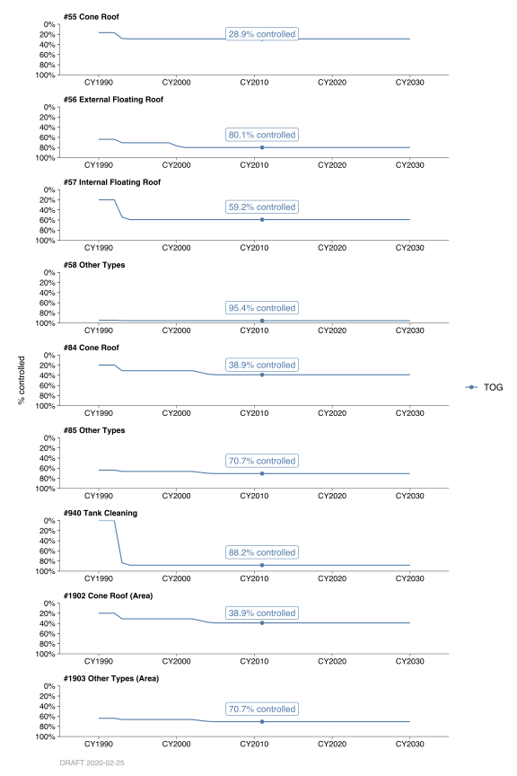
Regulation 8 Rule 5 controls emissions from the storage of organic liquids. Control efficiencies are estimated to range from 17% to 96%, depending on the type of tank, percentage of sources with true vapor pressures above 0.5 psi, and average true vapor pressure of the corresponding category. The following table show the control and rule efficiencies. (Sources with true vapor pressure greater than 0.5 psi are affected by this rule.)
FIXME: TABLE OMITTED
By: Tan Dinh Date: January 2014 Base Year: 2011
6.2 Refinery and Marine Loading Operations
TODO
6.3 Natural Gas Distribution
6.3.1 Emissions
6.3.1.1 Introduction
Emissions associated with the transmission of natural gas are mostly fugitive organic emissions that occur due to the leaks in pipeline. Components such as valves, flanges, pumps, compressors, and pressure relief valves (PRVs) are the potential leak sources.
Categories 61 and 868, account for fugitive organic emissions including methane (CH4) from natural gas distribution system in the San Francisco Bay Area. Emissions from Pacific Gas and Electric’s (PG&E’s) pipeline system that distributes natural gas for its own use are covered in Category #61. Emissions from PG&E’s pipeline system that distributes natural gas to residential, commercial and industrial customers are covered in Category #868.
6.3.1.2 Methodology
Fugitive emissions occur from leaks in the pipeline distribution system. Prior to 1990, an emission factor of 0.7% by volume of gas distributed was used. This factor was based on the South Coast Air Quality Management District report “Estimated Fugitive Emissions from Natural Gas Transmission for Calendar Year 1979”, July, 1980. Since 1990, an emission factor of 0.2% has been used for both distribution systems: PG&E’s own usage (Category #61) and PG&E’s customers (Category #868). This emission factor is based on the 1990 PG&E report titled “Unaccounted-For Gas Project”. Emission Factors in pounds per thousand cubic feet of gas (lb/MCF) are shown below.
| Categories | Total Organics (TOG) | Methane (CH4) |
|---|---|---|
61, 868 |
88.0 | 85.4 |
6.3.1.3 County Distribution
County distributions for Category #61 and #868 are based on natural gas usage data obtained from the California Energy Commission (CEC), PG&E, and City of Palo Alto.
6.3.1.4 Temporal Variation
The daily, weekly and monthly emission rates are considered to be uniform.
6.3.2 Trends
6.3.2.1 History

In general, emissions increase as activity increases and emissions decrease as activity decreases. In recent years, emissions for category #868 have been increasing, while emissions for category #61 have been on the decrease due to PG&E’s divestments in power plants.
For Base Year 1983, all natural gas distribution losses were handled as a single category which had been designated as Category #43. The category has been subsequently split into two categories (#61 and #868) since Base Year 1987.
For Category #61 up to base year 2008, it was assumed that annual emissions would tend to follow two components: services industry employment and population by county in the District. As such, a hybrid growth profile was developed based on 50% of the appropriate county services industry employment value and 50% of the appropriate county population value in combination with CEC’s natural gas data. For Category #868 up to base year 2008, it was assumed that annual emissions would tend to follow: manufacturing industry employment and population by county in the District in combination with CEC’s natural gas consumption forecasts. As such, a hybrid growth profile was developed based on 50% of the appropriate county manufacturing industry employment value and 50% of the appropriate county population value in combination with CEC’s natural gas data. For previous forecasts, the employment and population data was obtained from the Association of Bay Area Government’s (ABAG’s) 2009 “Projections” reports.
6.3.2.2 Growth
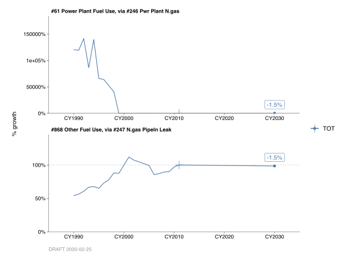
Annual demand for natural gas varies in response to business conditions and annual temperatures but has been generally declining or flat over recent years. This is due in part to historically low number of heating degree days and building and appliance efficiency standards, utility and public agency programs, and price and other effects. This trend is projected to continue with a population growth at a faster rate than total demand for natural gas.
By: S. Claire Date: January 2014 Base Year: 2011
6.4 Gasoline Bulk Plant Storage Tanks
6.4.1 Emissions
6.4.1.1 Introduction
These categories account for the organic emissions from the storage of organic liquids in tanks at bulk plant and terminals. The emissions are due to breathing and working losses. Breathing loss is the expulsion of vapor from tank due to vapor expansion and contraction of the liquid in the tanks. Working loss occurs when vapor is displaced during tank loading operations and when air drawn into the tank during unloading operations.
6.4.1.2 Methodologies
These categories contain point source emissions. Emissions were determined by the District’s data bank system. These data originated with tank information (i.e. vapor pressure, tank color, size, throughput, etc.) supplied by the plants and stored in the District’s data bank system. Throughput is updated upon permit renewal. The organic liquid storage emission factors were obtained from AP-42.
6.4.1.3 Monthly Variation
The data bank contains percentage of throughput data for each seasonal quarter: (December - February, March - May, June - August, September - October) provided by companies holding District permits.
6.4.1.4 County Distribution
Emissions distributed into counties were based on actual locations of the plants in the Bay Area.
6.4.2 Trends
6.4.2.1 History
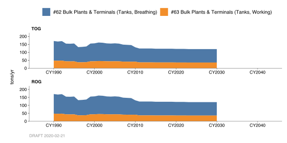 Historical data was based on past years gasoline consumption in the Bay Area. The estimated gasoline consumption was obtained from California Taxable Gasoline Sales.
6.4.2.2 Growth
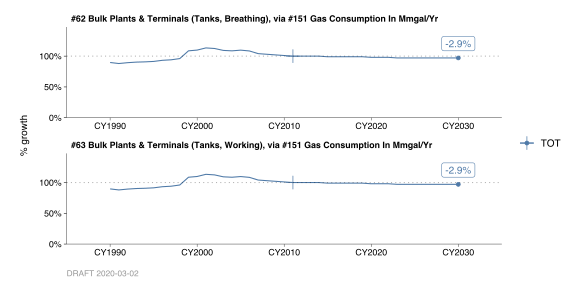
The reported year-to-year variation in emissions is due to changes in either the volume of materials put through the storage tank, or in the composition of the organic liquids stored. Projections are based on future gasoline consumption in the Bay Area.
6.4.2.3 Control
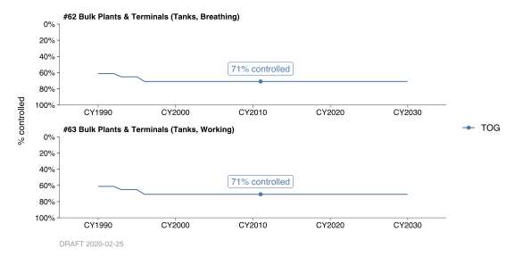
Emissions were reduced due to the effect of Regulation 8 Rule 5, amended on October 18, 2006. This rule requires reducing emissions of organic liquid loaded from loading operations at terminals and bulk plants.
On April 15, 2009, the District amended the Regulation 8, Rule 39 (Gasoline Bulk Plants). The amendments include a requirement to minimize the release of organic compounds during maintenance and repair operations, and a reduction in the allowable backpressure in new vapor recovery system piping.
By: Michael Nguyen Date: January, 2014 Base Year 2011
6.5 Non-Gasoline Terminals and Bulk Plants Storage
6.5.1 Emissions
6.5.1.1 Introduction
This category accounts for the organic emissions from the storage of organic liquids (non-gasoline) in tanks at bulk plant and terminals. The emissions are due to breathing and working losses. Breathing loss is the expulsion of vapor from tank due to vapor expansion and contraction of the liquid in the tanks. Working loss occurs when vapor is displaced during tank loading operations and when air drawn into the tank during unloading operations.
6.5.1.2 Methodology
This category contains point source emissions. The data originated with tank information (i.e. vapor pressure, tank color, size, throughput, etc.) supplied by the plants. Throughput is updated upon permit renewal. Throughput is updated upon permit renewal. The organic liquids (non-gasoline) emission factors were obtained from AP-42.
6.5.1.3 Monthly Variation
The data bank contains percentage of throughput data for each seasonal quarter: (December - February, March - May, June - August, September - October).
6.5.1.4 County Distribution
Emissions distributed into counties were based on locations of the plants in the Bay Area.
6.5.2 Trends
6.5.2.1 History
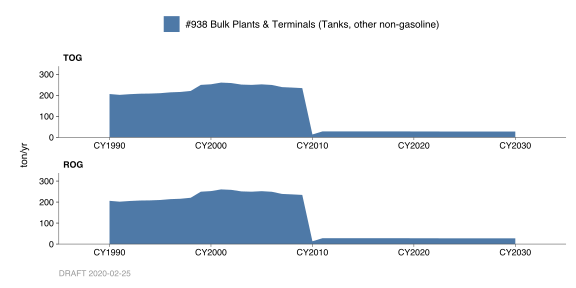
Historical data was based on past years gasoline consumption obtained from California Taxable Gasoline Sales in the Bay Area. Prior to 1999 Base Year source inventory, this category had been included from storage tank at bulk plants and terminals categories.
6.5.2.2 Growth
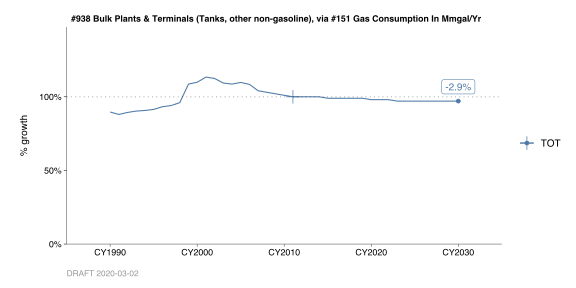
The reported year-to-year variation in emissions is due to changes in either the volume of materials put through the storage tank, or in the composition of the organic liquids stored. There is no data available to project emissions for this category. Therefore, projected emissions are assumed to grow at the rate of 0.5% per year.
6.5.2.3 Control
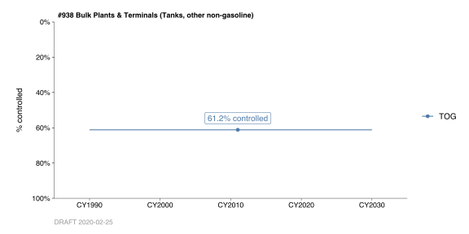
Emissions were reduced due to the effect of Regulation 8 Rule 6, amended in March 1982 The amended rules require reducing emissions of organic liquid loaded from loading operations at terminals and bulk plants.
By: Michael Nguyen Date: January, 2014 Base Year 2011
6.6 Gasoline Truck Loading
6.6.1 Emissions
Introduction
Fuels are delivered by tank trucks from the fuel terminals to service stations, commercial accounts and local bulk storage plants. Loading losses are primary source of evaporative emission from truck loading. Loading losses occur as organic vapors in the empty tank are displaced to atmosphere by the liquid being loaded into the tanks. These categories account for the organic emissions associate with transfer of gasoline to trucks from racks at terminals and bulk plants.
Methodologies
These categories contain point source emissions. Emissions were determined by the District’s Data Bank System. These data originated with information supplied by the plants and stored in the District’s Data Bank System. Throughput is updated upon permit renewal. The organic liquid storage emission factors were obtained from AP-42.
Monthly Variation
The Data Bank contains percentage of throughput data for each seasonal quarter: (December - February, March - May, June - August, September - October).
County Distribution
Emissions distributed into the nine counties were based on the actual locations of the plants in the Bay Area.
6.6.2 Trends
History
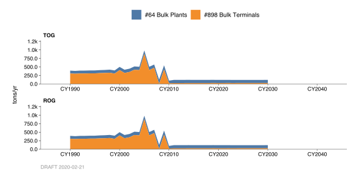
Historical emission data was based on past years Bay Area gasoline consumption. The estimated gasoline consumption was obtained from California Taxable Gasoline Sales, Board of Equalization.
Growth
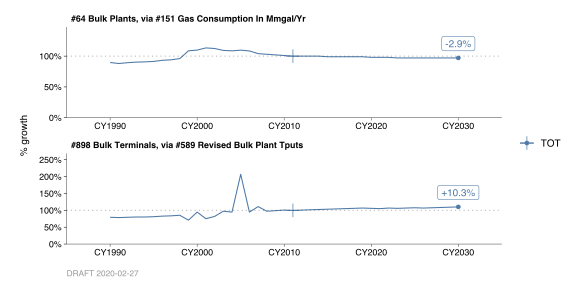
Projections are based on future gasoline consumption in the Bay Area.
Control
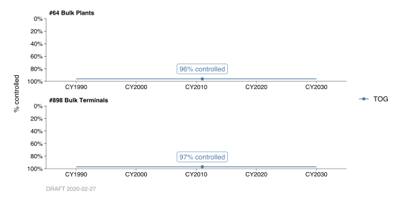
Truck loading emissions were reduced due to the effect of Regulation 8 Rule 39, adopted on October 7, 1987 and Regulation 8 Rule 33, adopted on November 30, 1983. Regulation 8 Rule 33 requires to reduce emissions of precursor organic compounds from gasoline transfer operations at gasoline bulk terminals and delivery vehicles (Cat # 898). Regulation 8 Rule 39 requires to reduce emissions of precursor organic compounds from gasoline transfer operations at gasoline bulk plants and delivery vehicles (Cat # 64).
On April 15, 2009, the District amended the Regulation 8, Rule 33 (Gasoline Bulk Terminals) and Regulation 8, Rule 39 (Gasoline Bulk Plants). The amendments include a requirement to minimize the release of organic compounds during maintenance and repair operations, and a reduction in the allowable backpressure in new vapor recovery system piping.
By: Michael Nguyen Date: January, 2014 Base Year 2011
6.7 Gasoline Truck Transport
6.7.1 Emissions
Introduction
Gasoline truck transit losses are similar in many ways to breathing losses associated with petroleum storage. The gasoline is transferred by tank trucks from refineries and bulk plants for delivery to end user outlets. Emissions depend on the vapor tightness of the tank, the pressure relief valve settings, the pressure in the tank at the start of the trip, the vapor pressure of fuel being transported, and the degree of fuel vapor saturation of space in the tank.
Methodology
This category accounts for the organic emissions occurring in transit while transporting fuel by tank trucks. Emissions from gasoline cargo tanks include the fugitive emissions and emissions from maintenance. The emission points are from pressure-related fugitive (Cat#1600, Cargo Tank) emissions from the cargo tank fittings and valves, vapor hoses (Cat#1601, Loading-Return Vapor Hoses) after loading into the underground tank, and wetted wall emissions from the product (Cat#1602, Loading-Main Hoses).
Pressure-related fugitive (Cat#1600, Cargo Tank) emissions are volatile organic vapors leaking from fittings, valves and other connecting points in the vapor collection system on a cargo tank. Pressure inside the cargo tank is caused by solar and reflective heat gains. Due to these heat gains, vapors inside the cargo tank expand and exert pressure to the tank walls, fittings and valves.
Emissions from the vapor hose (Cat#1601, Loading-Return Vapor Hoses) are a result of vapors trapped inside the hose after product delivery to the underground tank. Some vapors condense inside the hose. When the hose is disconnected from the underground tank and truck fittings, the vapors and condensed vapor inside the hose are emitted into the ambient air.
Emissions from the product hoses (Cat#1602, Loading-Main Hoses) are a result of residual product clinging to the walls of the hoses. Residual liquid, inside the hose, vaporizes into the ambient air resulting in emissions.
This methodology is presently based on CARB’s methodology. TOG emission factors are listed below:
- Pressure-Related (Cat#1600) Losses: 0.588 lbs per 1000 gallons,
- Vapor Hose (Cat#1601) Losses: 0.024 lbs per 1000 gallons,
- Product Hose (Cat#1602) Losses: 0.133 lbs per 1000 gallons.
The estimates of gasoline consumption in the Bay Area were provided by California State Board of Equalization, Fuel Taxes Statistics & Reports and Caltrans Transportation Planning Support Information System (TPSIS). These estimates were made by adjustments of Gasoline Dispensing Facility sales, population, number of registered vehicles, and the number of drivers’ license. The throughput for this category is apportioned based upon throughput and TPSIS’s estimated gasoline consumption. The total emissions are determined by multiplying the emission factor and the throughput.
Monthly Variation
Monthly variation of emissions was based on the monthly California taxable sales data from the Board of Equalization.
County Distribution
Emissions distributed into the nine counties were based on Caltrans Transportation Planning Support Information System’s breakdown.
6.7.2 Trends
History

Prior to 1999 Base Year, taxable gasoline sales for California obtained from the Board of Equalization were assumed to distribute to all gasoline filling stations.
Growth
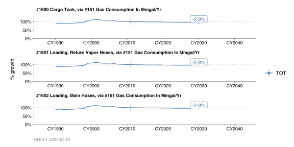
Gasoline consumption in 2007 reached record levels. However, the gasoline consumption decreased slightly during the economic recession in 2008 - 2010. Projections are based on future gasoline consumption in the Bay Area. Projections are based on future gasoline consumption in the Bay Area.
By: Michael Nguyen Date: January, 2014 Base Year 2011
6.8 Gasoline Filling Station Spillage
6.8.1 Emissions
Introduction
Gasoline spillage occurs during filling such as prefill and postfill nozzle drip and overflow from the vehicle’s fuel tank at service stations. The amount of spillage loss can depend on the service station business characteristics and nozzle types (conventional nozzle or vapor recovery nozzle).
Methodology
This category accounts for evaporative emissions resulting from spillage gasoline dispensing facilities (GDFs). The estimates of gasoline consumption in the Bay Area were provided by California State Board of Equalization, Fuel Taxes Statistics & Reports and Caltrans Transportation Planning Support Information System (TPSIS). These estimates were made by adjustments of Gasoline Dispensing Facility sales, population, number of registered vehicles, and the number of drivers’ license. TOG emission factor was taken from AP-42. The TOG emissions are determined by multiplying the emission factor and the throughput.
Monthly Variation
The monthly variation of emissions was based on monthly California taxable sales data from the Board of Equalization.
County Distribution
Emissions distributed into the nine counties were based on Caltrans Transportation Planning Support Information System’s breakdown.
6.8.2 Trends
History
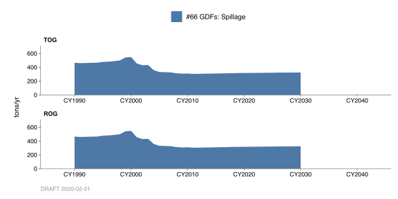
Historical emissions were based on past years Bay Area gasoline consumption. Prior to 1990 Base Year, taxable gasoline sales for California obtained from the Board of Equalization were assumed to distribute to all gasoline filling stations in California. ARB estimated that Bay Area consumed 20.01% of this state total. The emissions for this category were determined according to this estimated throughput.
Growth
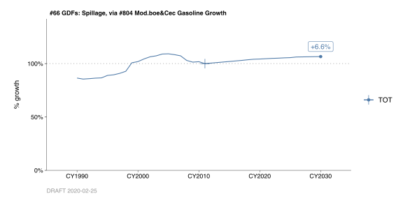
Gasoline consumption in 2007 reached record levels. However, the gasoline consumption decreased slightly during the economic recession in 2008 - 2010. Projections are based on future gasoline consumption in the Bay Area.
The Air Resources Board (ARB) is in the process of updating the emission factors for GDFs’ categories: gasoline storage and transfer operations from cargo tank trucks to GDFs and from GDFs to vehicles, fuel containers, and gasoline-powered equipment. With the current requirements of the CARB’s Phase II Vapor recovery systems regulations, the GDF categories’ emissions will be greatly reduced for forecasted emission years.
Control
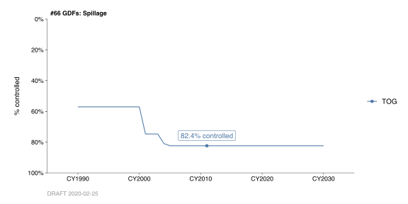
Emissions were reduced due to the improvement of vapor recovery nozzle in Phase II Gasoline Dispensing Facilities. Regulation 8 rule 7 does not specify emission reduction for this category. However, the improvement of the vapor recovery nozzles reduces spillage at vehicle filling services stations.
By: Michael Nguyen Date: January, 2014 Base Year 2011
6.9 Gasoline Filling Station Storage
6.9.1 Emissions
Introduction
Emissions from gasoline dispensing facilities (GDF) are generated when gasoline vapors in the underground storage tank are displaced to the atmosphere by the gasoline being loaded into the tank. The emissions are due to breathing (vapor expansion and contraction of liquid in the tank) and working (from filling and emptying the tanks). Breathing losses occur as a result of dinural temperature and pressure variations. Working losses occur as fueling from underground storage tanks, fresh air is entered into the tank through the vent. Because this entering air is not at equilibrium with the liquid in the tank, evaporation of liquid occurs. Most gasoline dispensing facilities (GDF) in the Bay Area were equipped with Phase I and/or Phase II vapor recovery systems. Phase I vapor recovery system employs a dual hose that recovers gasoline vapor back to the tank truck during the filling of underground tanks. The integral part of Phase II vapor recover system is the vapor recovery nozzle and hose that efficiently collect the displaced vapors.
Methodologies
These categories account for organic emissions associated with the storage of fuel at gasoline service stations (or GDF). The estimates of gasoline consumption in the Bay Area were provided by California State Board of Equalization, Fuel Taxes Statistics & Reports and Caltrans Transportation Planning Support Information System (TPSIS). These estimates were made by adjustments of Gasoline Dispensing Facility sales, population, number of registered vehicles, and the number of drivers’ license. The throughput for each type of GDF was estimated based on the information contained in the District’s data bank.
The 2011 gasoline consumption in the Bay Area was 7,041 thousand gallons per day. Emission factors were taken from AP-42, Section 4.4. The total emissions for area source categories are determined by multiplying the emission factor, control factor and throughput.
Monthly variation
Monthly variation of emissions was based on gasoline usage data for California. The monthly Bay area gasoline usage was estimated from Board of Equalization Taxable Gasoline Sales monthly report.
County Distribution
Emissions distributed into the nine counties were based on Caltrans’ Transportation Planning Support Information System’s breakdown.
6.9.2 Trends
History
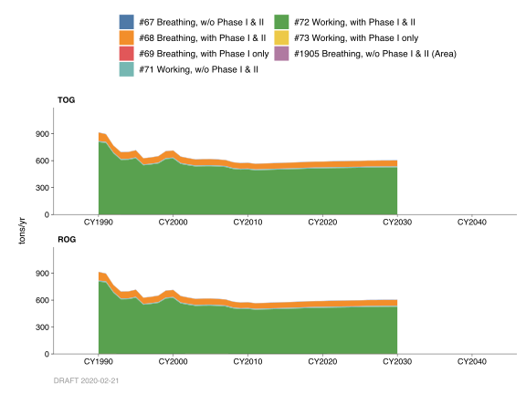
Emissions for these categories had been reduced due to Phase I and II vapor balance system requirements since 1975. Prior to 1990 Base Year, taxable gasoline sales for California obtained from the Board of Equalization were assumed to distribute to all gasoline filling stations in the California. ARB estimated that Bay Area consumed 20.01% of this state total. The emissions for this category were determined according to this estimated throughput.
Growth
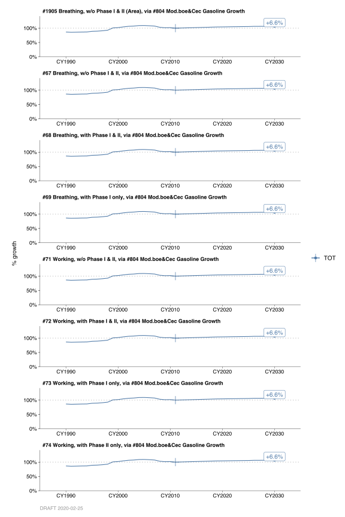 Gasoline consumption in 2007 reached record levels. However, the gasoline consumption decreased slightly during the economic recession in 2008 - 2010. Projections are based on future gasoline consumption in the Bay Area.
Control
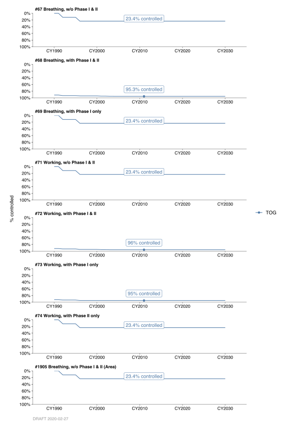
Emissions were reduced due to the effect of Regulation 8, Rule 7, Phase II requirements and the following actions:
- In July 1976, California Health & Safety Code required CARB certified 90% Phase II gasoline dispensing facilities.
- In August 1978, CARB amended Phase II GDF to 95% efficiency.
- In July 1986, CARB issued “Rectification Orders”.
- In October 1990, District adopted pressure-vacuum valve requirements for GDF.
- In January 1992 , Re-formulated Gasoline, Phase I , and
- In January 1999, Re-formulated Gasoline, Phase II.
In March 2000, California Air Resources Board (CARB) adopted a series of new Enhanced Vapor Recovery (EVR) amendments to its gas station vapor recovery regulations (Phase I and Phase II). In addition, CARB adopted new standards:
- to make vapor recovery system compatible with on-board vapor recovery (ORVR) systems on motor vehicles,
- to reduce gasoline spillage, liquid retain in the nozzles, and
- to pressure-related fugitive emissions.
The adopted amendments also include mandatory In-Station-Diagnostics (ISD), which are requiring electronic monitoring of vapor recovery system operation and performance. The table below summarizes the EVR implementation schedule.
| Control Type | Effective Date | Certification Requirement Date |
|---|---|---|
| Phase I Vapor Recovery | 2001-04-01 | 2001-04-01 |
| Phase II Vapor Recovery | 2003-04-01 | 2003-04-01 |
| ORVR Compatibility | 2001-04-01 | 2003-04-01 |
| Liquid Retention | ||
| * Initial limit: 350 mls/1000 gallons | 2001-04-01 | 2001-04-01 |
| * Final limit: 100 mls/1000 gallons | 2001-04-01 | 2003-04-01 |
| Spillage and Dripless Nozzles | 2001-04-01 | 2004-04-01 |
| In-Station Diagnostics | ||
| * >1,800,000 gal/year | 2003-04-01 | 2003-04-01 |
| * >160,000 gal/yr | 2004-04-01 | 2004-04-01 |
By: Michael Nguyen Date: January, 2014 Base Year 2011
6.10 Gasoline Filling Station Fueling
TODO
6.11 Gasoline Filling Station - Excess Emissions
TODO
6.12 Portable Fuel Container Spillage
TODO
6.13 Aircraft Fueling
TODO
6.14 Ship and Boat Fueling
TODO
6.15 Other Fueling
TODO
6.16 Sterilizer Venting
TODO
6.17 Asphalt Paving
TODO
6.18 Asphalt Roofing
TODO
6.19 Solvent Cleaning Operations
TODO
6.20 Dry Cleaning
TODO
6.21 Printing
TODO
6.22 Adhesive Sealants
TODO
6.23 Structures Coatings
TODO
6.24 Industrial Commercial Coating
TODO
6.25 Miscellaneous Organic Evaporation
TODO
6.26 Vacuum Truck at Refinery, Marine, Bulk Terminals
TODO